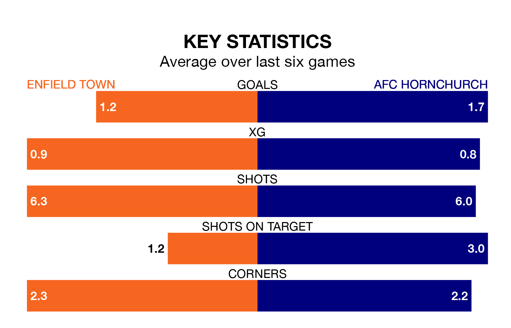

Two of Isthmian Premier Division's top sides face each other at the Queen Elizabeth Stadium in Saturday's kick-off, when fourth-placed Enfield Town host table-topping AFC Hornchurch.
Enfield have picked up 13 wins and six draws from 25 games so far this season, and sit 10 points below the visitors going into the 3pm match.
Hornchurch, meanwhile, have won 16 and drawn seven of 24, picking up 55 points.
With 60 goals in 24 games so far this season, Hornchurch are the league's highest scorers with 2.5 goals per game. And they are conceding fewer than average, letting in 20 goals at a rate of 0.8 per game.
Enfield are also above average scorers, with 2.0 goals per game, compared to a league average of 1.6. They have conceded 1.6 goals per game.
In the last 10 years, Enfield and Hornchurch have played each other on 11 occasions. They won four each, and they drew three times.
On average, Enfield scored 1.3 goals and Hornchurch 1.7 in those matches.
Their last meeting was on November 4, when Hornchurch won 2-0 at home.
Town are in mixed form in Isthmian Premier Division, with two wins and two draws from their last six games.
With two wins and four draws over that period, the visitors' form is slightly better – they have taken 10 points from 18, compared to the home team's eight.
Enfield's last match was on January 20, a 3-3 draw against Hashtag United.
Hornchurch drew 1-1 with Billericay Town last time out, on January 16.
Updated: 08:51 (UTC), 25/01/24